Ghid de utilizare
Vânt la Decolare pune într-un singur tabel vântul pe ore de la toate decolările tale și colorează fiecare oră după direcțiile decolării și după limitele tale. Ghidul te ia pas cu pas, de la prima pornire până la jurnalul de zbor.
1Prima pornire
La prima deschidere alegi decolările care te interesează. Nu ai nevoie de cont.

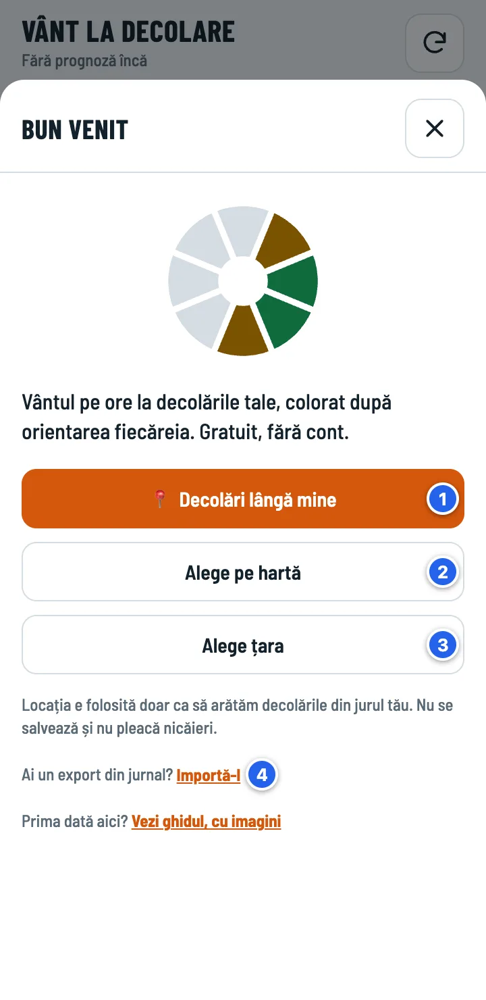
- Limba: română sau engleză. O poți schimba oricând din Setări.
- Decolări lângă mine: decolările din jurul tău, cele mai apropiate primele. Telefonul îți cere permisiunea pentru locație; poziția nu se salvează și nu pleacă nicăieri.
- Alege pe hartă: aceleași decolări, pe hartă.
- Alege țara, dacă nu vrei să dai locația sau zbori în altă parte.
- Importă-l: ai un export Excel din jurnal, de pe alt telefon? Îți aduce înapoi și decolările, și zilele de zbor.

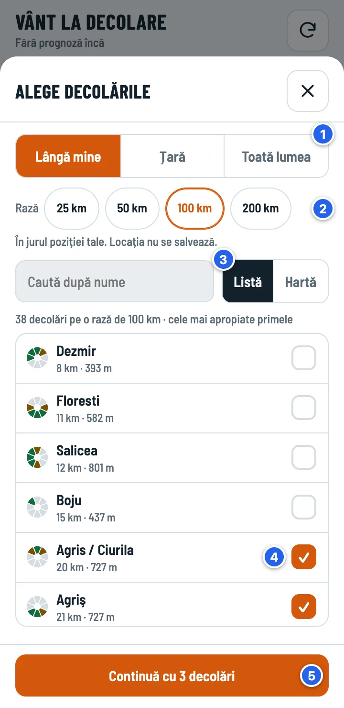
- Zona: Lângă mine, Țară sau Toată lumea. Toată lumea înseamnă 11.508 decolări (≈ 1 MB), așa că se încarcă doar dacă ceri.
- Raza în jurul tău: 25, 50, 100 sau 200 km.
- Listă sau Hartă. În listă poți căuta după nume.
- Atinge o decolare ca s-o bifezi sau s-o debifezi. Cercul din stânga arată direcțiile ei: verde = bune, galben = marginale. „fără direcții” înseamnă că ParaglidingEarth nu le are (vezi mai jos).
- Continuă, apoi alegi limitele (Elev, Pilot sau Avansat, detalii) și apeși Gata.

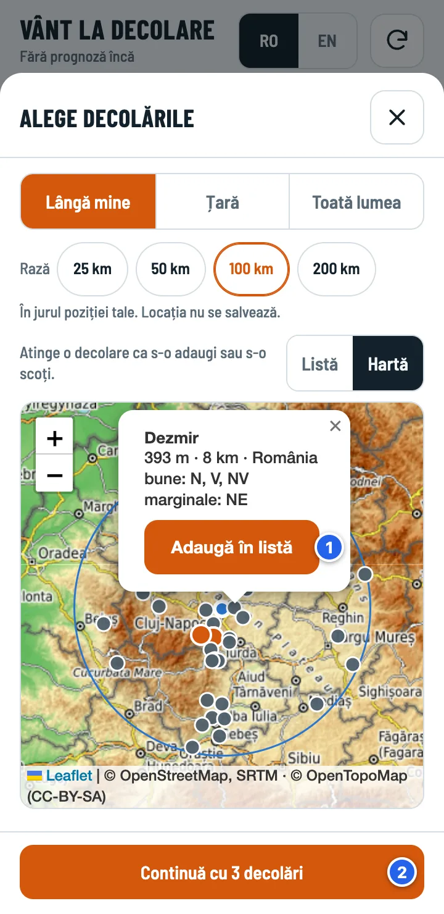
- Atinge un punct ca să vezi decolarea: altitudinea, distanța, direcțiile. Adaugă în listă o bifează.
- Continuă, ca la listă.
Pe hartă, punctele portocalii sunt decolările alese, iar cele cu contur galben nu au direcții. Cercul albastru e raza aleasă, cu poziția ta în centru. Le poți schimba oricând: decolările din Situri, limitele din Setări.
2Tabla pe ore
Ecranul principal: fiecare rând e o decolare, fiecare coloană o oră. Jos ai cele patru secțiuni ale aplicației.

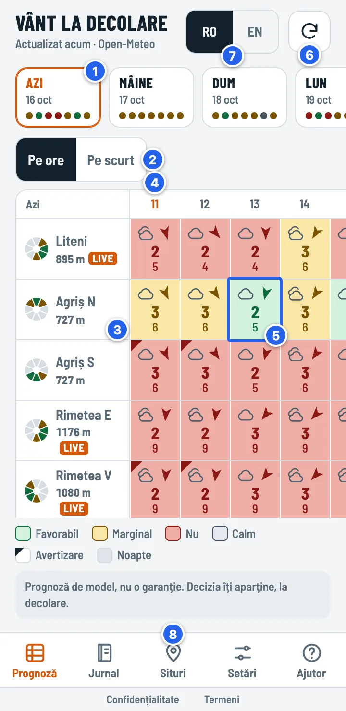
- Zilele: azi și următoarele 6. Fiecare punct e o decolare, în ordinea din listă, în culoarea zilei ei; verde înseamnă cel puțin 2 ore favorabile la rând. Atinge o zi ca s-o vezi.
- Pe ore sau Pe scurt: tabla cu toate orele, sau rezumatul zilei.
- Decolarea: numele, altitudinea și cercul direcțiilor. LIVE = are o stație Holfuy la cel mult 5 km. Atinge numele pentru pagina decolării.
- Ora curentă. Azi, tabla începe cu ora curentă; orele trecute rămân la stânga, estompate. Glisează orizontal pentru celelalte ore. În altă zi, tabla începe de la prima oră favorabilă.
- O oră la o decolare. Atinge-o ca să vezi de ce are culoarea asta.
- ↻ descarcă din nou prognoza; sus scrie când a fost actualizată. Prognoza se reîmprospătează și singură când deschizi sau revii în aplicație, dacă e mai veche de 30 de minute.
- Navigarea: Prognoză (tabla), Jurnal, Situri, Setări și Ajutor: pe scurt, cum citești tabla, plus acest ghid.
3O celulă, pe înțeles

- Colțul marcat: o avertizare. Ora are ceva ce trebuie citit: vânt tare la altitudine, risc de furtună sau de supradezvoltare, ori o decolare fără direcții.
- Cerul: senin, nori (cu tipul lor), ploaie, ceață, ninsoare, furtună.
- Săgeata arată încotro bate vântul. Vântul din est are săgeata spre vest.
- Cifra mare: vântul mediu la 10 m, în m/s.
- Cifra mică: rafalele, în m/s. Dacă plouă, în locul ei apare ploaia, în mm.
Culorile
Culorile se deosebesc și pentru cei cu daltonism. Cuvintele exacte sunt în fișa fiecărei ore.
4De ce această culoare?
Atinge orice celulă. Fișa orei arată verdictul și fiecare motiv care l-a coborât.

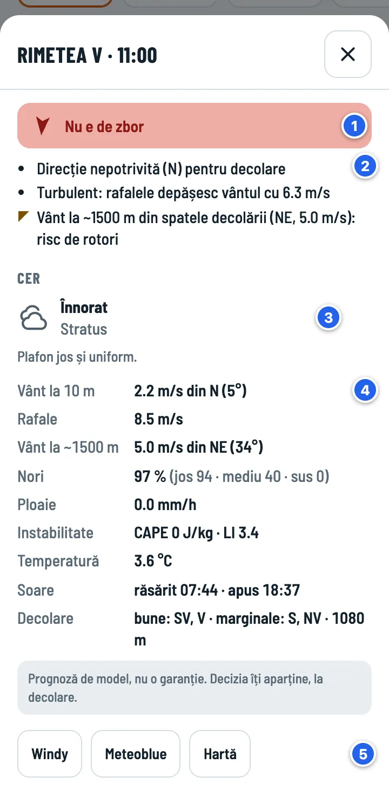
- Verdictul, cu săgeata vântului.
- Motivele: fiecare regulă care a contat; avertizările au colțul marcat. Aici: direcție nepotrivită, rafale cu 6 m/s peste vântul mediu (turbulent) și vânt la ~1500 m din spatele decolării (risc de rotori).
- Cerul: tipul norilor și ce înseamnă pentru zbor.
- Datele orei: vântul la 10 m și la ~1500 m, rafalele, norii pe niveluri, ploaia, instabilitatea (CAPE și LI), temperatura, răsăritul și apusul, direcțiile decolării.
- Aceeași decolare în Windy, Meteoblue și pe hartă.
5Pe scurt: toată ziua
Pe telefon, „Pe ore” arată 4–5 ore odată. „Pe scurt” pune toată ziua pe un singur ecran.

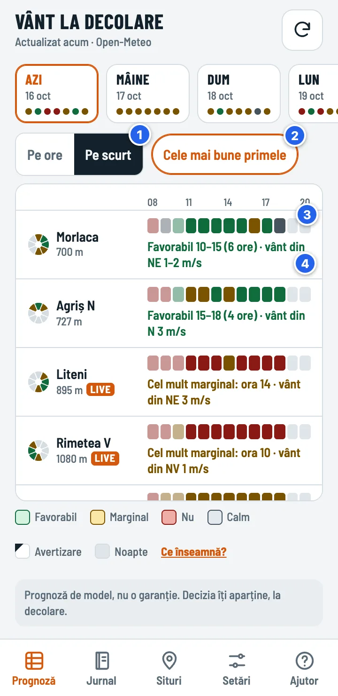
- Pe scurt. Aplicația ține minte ce ai ales.
- Cele mai bune primele: decolările cu fereastră favorabilă urcă în capul listei. Oprit, ordinea e cea din lista ta.
- Banda orelor: un pătrățel pe oră, de la 08 la 20, în culorile din tablă.
- Fereastra cea mai bună, de exemplu „Favorabil 10–15 (6 ore) · vânt din NE 1–2 m/s”. „Favorabil” cere cel puțin 2 ore bune la rând; o oră izolată apare ca „Doar ora 15”. Dacă se anunță instabilitate, se adaugă „risc de supradezvoltare de la …”.
Atinge un rând: tabla trece pe „Pe ore”, la fereastra acelei decolări, cu rândul evidențiat.
6Pagina decolării
Atinge numele unei decolări în tablă.

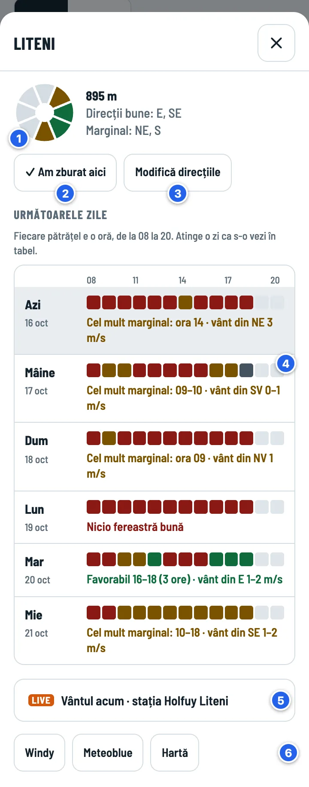
- Direcțiile decolării (verde = bune, galben = marginale) și altitudinea.
- ✓ Am zburat aici notează o zi de zbor în jurnal, cu decolarea deja aleasă.
- Modifică direcțiile, dacă știi mai bine decât ParaglidingEarth.
- Următoarele zile: câte o bandă de ore pe zi și fereastra cea mai bună. Atinge o zi ca s-o deschizi în tablă.
- Vântul acum: widgetul stației Holfuy cea mai apropiată (până la 5 km). E pliat și se încarcă doar când îl deschizi.
- Linkuri spre Windy, Meteoblue și hartă.
Decolări fără direcții
Cam o treime din decolările din ParaglidingEarth nu au direcțiile trecute. Pentru ele aplicația nu știe dacă vântul bate din față, așa că verdictul e cel mult Marginal, cu colțul de avertizare, până setezi direcțiile.

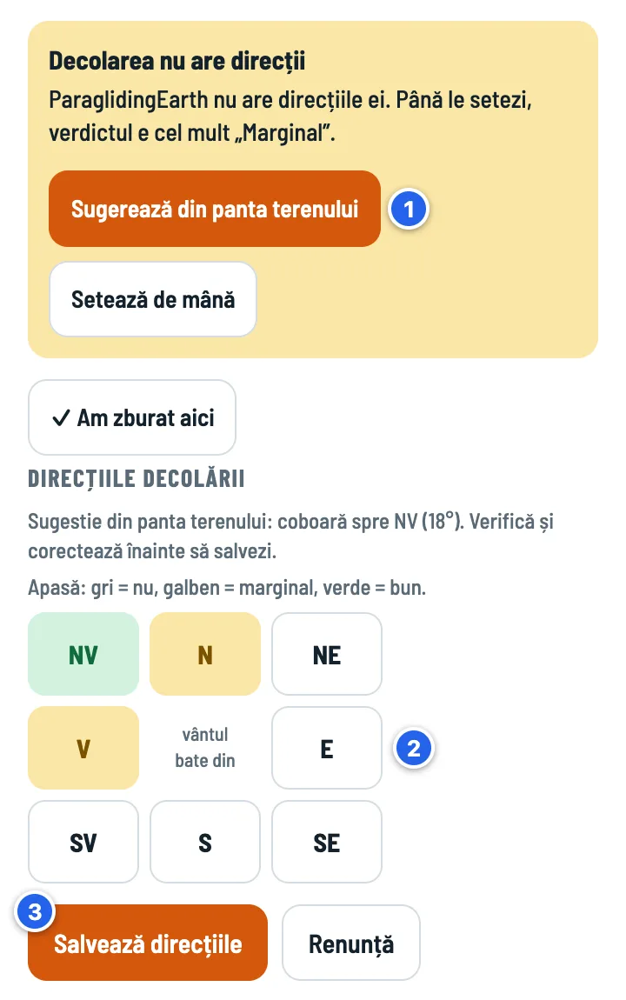
- Sugerează din panta terenului: aplicația citește altitudinea în 8 puncte, la 100 m în jurul decolării, și propune direcția în care coboară panta.
- Verifică și corectează. Atinge o direcție ca s-o schimbi: gri = nu, galben = marginal, verde = bun.
- Salvează direcțiile. De acum decolarea primește verdict normal.
7Lista ta de decolări
Butonul Situri, jos.

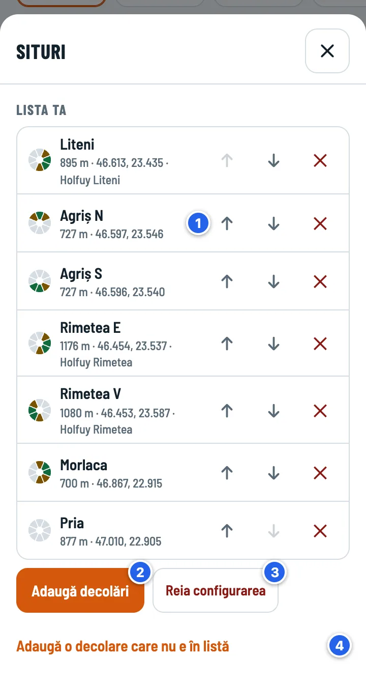
- ↑ ↓ schimbă ordinea; aceeași ordine apare în tablă și în punctele zilelor. ✕ scoate decolarea din listă; ai 5 secunde să apeși Anulează.
- Adaugă decolări: același ecran ca la prima pornire (lângă tine, țară sau toată lumea; listă sau hartă).
- Reia configurarea: alegi decolările de la zero (apeși de două ori). Jurnalul nu se atinge.
- Adaugă o decolare care nu e în listă: vezi mai jos.
O decolare nouă, de mână
- Alege pe hartă și pune un pin pe decolare. Aplicația completează coordonatele, altitudinea, numele locului și direcțiile sugerate din pantă. Dacă la mai puțin de 1 km există deja o decolare în ParaglidingEarth, ți-o propune.
- Sunt la decolare (GPS) pune pinul unde ești.
- Sau scrie coordonatele. Din Google Maps: ține apăsat pe decolare și copiază coordonatele afișate sus. Linkurile scurte (maps.app.goo.gl) nu conțin coordonatele.
- Stație Holfuy (opțional): numărul stației sau linkul ei. Gol = cea mai apropiată, până la 5 km.
- Direcțiile: atinge fiecare direcție (gri = nu, galben = marginal, verde = bun). Trebuie aleasă cel puțin una.
8Limite, ore și limbă
Butonul Setări, jos.

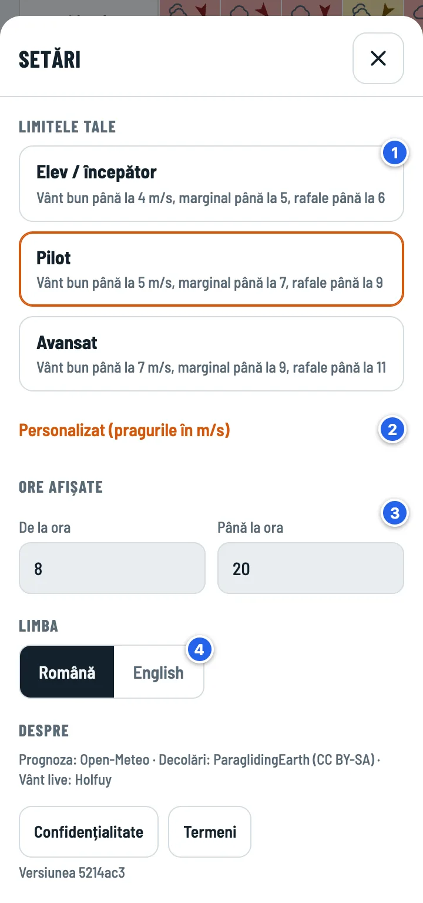
- Limitele tale: Elev / începător, Pilot sau Avansat. Toate culorile se recalculează pe loc.
- Personalizat: pragurile tale, în m/s.
- Ore afișate: implicit 08–20.
- Limba: română sau engleză.
| Elev / începător | Pilot | Avansat | |
|---|---|---|---|
| Vânt bun până la | 4 m/s | 5 m/s | 7 m/s |
| Marginal până la | 5 m/s | 7 m/s | 9 m/s |
| Rafale maxime | 6 m/s | 9 m/s | 11 m/s |
| Rafală − vânt (turbulent) peste | 3 m/s | 4 m/s | 5 m/s |
În toate profilurile: calm sub 1 m/s, ploaie peste 0,2 mm/h.
9Jurnalul de zbor
O intrare înseamnă o zi de zbor la o locație, cu timpul total în aer din ziua aceea. Jurnalul stă pe telefonul tău și, dacă vrei, în Google Drive-ul tău.

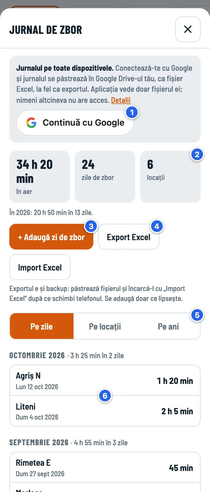
- Continuă cu Google (opțional): jurnalul se păstrează în Google Drive-ul tău, ca fișier Excel, și se sincronizează pe toate dispozitivele. Aplicația vede doar fișierul ei.
- Totalurile: timp în aer, zile de zbor, locații. Sub ele, anul curent.
- + Adaugă zi de zbor.
- Export Excel și Import Excel: backup-ul tău. Importul adaugă doar ce lipsește.
- Pe zile, Pe locații sau Pe ani.
- Atinge o zi ca s-o modifici sau s-o ștergi.

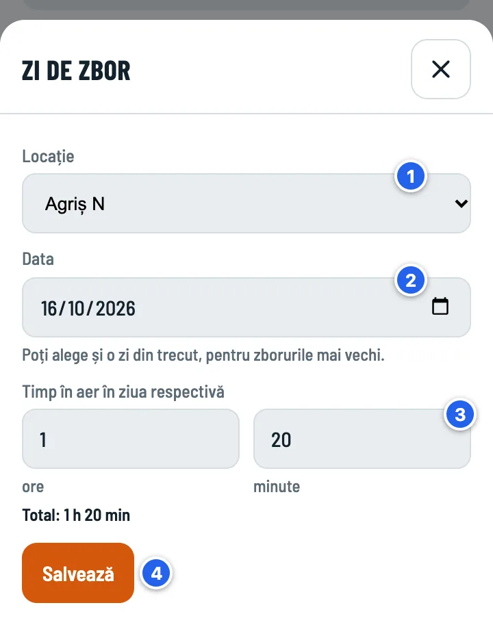
- Locația: decolările tale, locațiile din jurnal sau „Altă locație…”.
- Data. Poți alege și o zi din trecut.
- Timpul în aer din ziua aceea, în ore și minute. 80 de minute devin 1 h 20 min.
- Salvează.

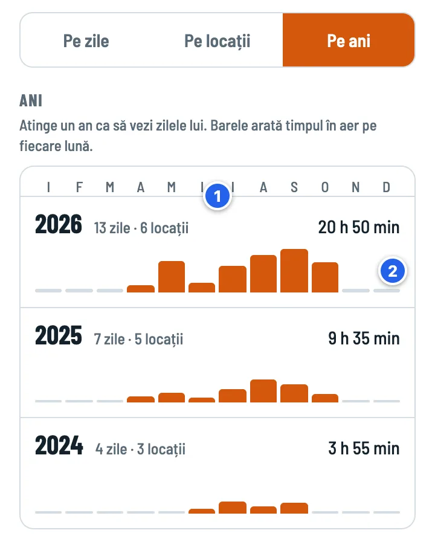
- Fiecare an: zilele de zbor, locațiile și timpul total în aer. Atinge un an ca să vezi zilele lui, cu filtrul „2025 ✕”; totalurile de sus arată doar anul acela.
- O bară pe lună, cu aceeași scară pentru toți anii, ca să-i poți compara.
Backup și telefon nou
- Cu Google: pe telefonul nou deschizi Jurnalul, apeși Continuă cu Google și jurnalul vine din Drive. Fișierul se numește „Vânt la Decolare - jurnal de zbor.xlsx” și are aceleași foi ca exportul.
- Fără Google: Export Excel pe telefonul vechi, apoi Import Excel pe cel nou (sau Importă-l la prima pornire). Odată cu zilele de zbor vin și decolările, din foaia „Situri”.
- Deconectarea (apeși de două ori) șterge jurnalul de pe dispozitiv; el rămâne în Drive. Dacă ai modificări care nu au ajuns în Drive, aplicația nu te deconectează.
Mai multe despre date, în Confidențialitate.
10Pe ecranul telefonului
Aplicația e o pagină web. O poți pune pe ecranul principal, ca pe o aplicație, fără magazin:
- Android (Chrome): deschide paraglidingwind.com, apasă meniul ⋮, apoi Adaugă pe ecranul de pornire (sau Instalează aplicația).
- iPhone (Safari): apasă butonul de partajare, apoi Adaugă pe ecranul principal.
Decolările, limitele și jurnalul stau în browserul în care folosești aplicația. Dacă ștergi datele site-ului din browser, se șterg și ele, așa că păstrează un export Excel sau conectează-te cu Google. Pe iPhone, aplicația de pe ecranul principal își ține datele separat de Safari: dacă ai început în Safari, adu-ți jurnalul cu Google sau cu Import Excel.
11Cum se calculează verdictul
Pentru fiecare oră aplicația verifică regulile de mai jos; verdictul orei e cel mai rău dintre ele. Pragurile vântului și ale rafalelor vin din limitele tale (în tabel: Pilot).
| Ce se verifică | Marginal | Nu |
|---|---|---|
| Direcția vântului la 10 m (8 direcții), după direcțiile decolării | direcție marginală; decolare fără direcții | direcție nepotrivită |
| Vântul mediu la 10 m | peste 5 m/s | peste 7 m/s |
| Rafalele | peste vântul mediu cu mai mult de 4 m/s (turbulent) | peste 9 m/s |
| Ploaia | – | peste 0,2 mm/h |
| Vântul la ~1500 m (850 hPa) | peste 8 m/s; sau peste 5 m/s din spatele decolării (risc de rotori) | peste 12 m/s |
| Furtuna | – | prognozată la ora respectivă sau în următoarele 2 ore |
| Instabilitatea | CAPE peste 800 J/kg și LI sub −2 (risc de supradezvoltare) | – |
- Sub 1 m/s ora e Calm: direcția nu mai contează. Rafalele, ploaia, vântul la altitudine și furtunile se verifică în continuare.
- Noaptea (după prognoza de lumină pentru fiecare oră) nu se dă verdict.
- O zi e Favorabil (în „Pe scurt”, în punctele zilelor și în pagina decolării) doar cu cel puțin 2 ore favorabile la rând.
- Prognoza vine de la Open-Meteo și e calculată pe un caroiaj de câțiva kilometri.
12Întrebări frecvente
De ce două decolări apropiate au exact același vânt?
Prognoza e calculată pe un caroiaj de câțiva kilometri, iar decolările din același pătrat primesc același vânt. Verdictul diferă după direcțiile fiecăreia.
Vântul e slab. De ce e „Marginal” sau „Nu”?
Atinge celula; motivul e în fișa orei. Des întâlnite: rafale mult peste vântul mediu (turbulent), vânt tare la altitudine sau din spatele decolării, risc de supradezvoltare, o decolare fără direcții.
Cât de des se actualizează prognoza?
Open-Meteo își actualizează modelele de câteva ori pe zi. Aplicația descarcă din nou prognoza când o deschizi sau revii în ea, dacă cea salvată e mai veche de 30 de minute. Cu ↻ o descarci oricând.
Ce se întâmplă fără semnal?
Vezi ultima prognoză descărcată, cu un mesaj sus și ora la care a fost descărcată. Zilele notate în jurnal se salvează pe telefon și ajung în Google Drive la următoarea sincronizare.
Unde sunt datele mele?
Pe telefonul tău, în browser. Aplicația nu are server și nu colectează nimic despre tine. Opțional, jurnalul se păstrează în Google Drive-ul tău. Detalii în Confidențialitate.
De unde vin decolările și direcțiile lor?
Din ParaglidingEarth (CC BY-SA), baza de date a decolărilor întreținută de piloți. Direcțiile sunt cele trecute acolo; le poți corecta din pagina decolării.
Am găsit o greșeală sau am o idee.
Scrie pe GitHub.